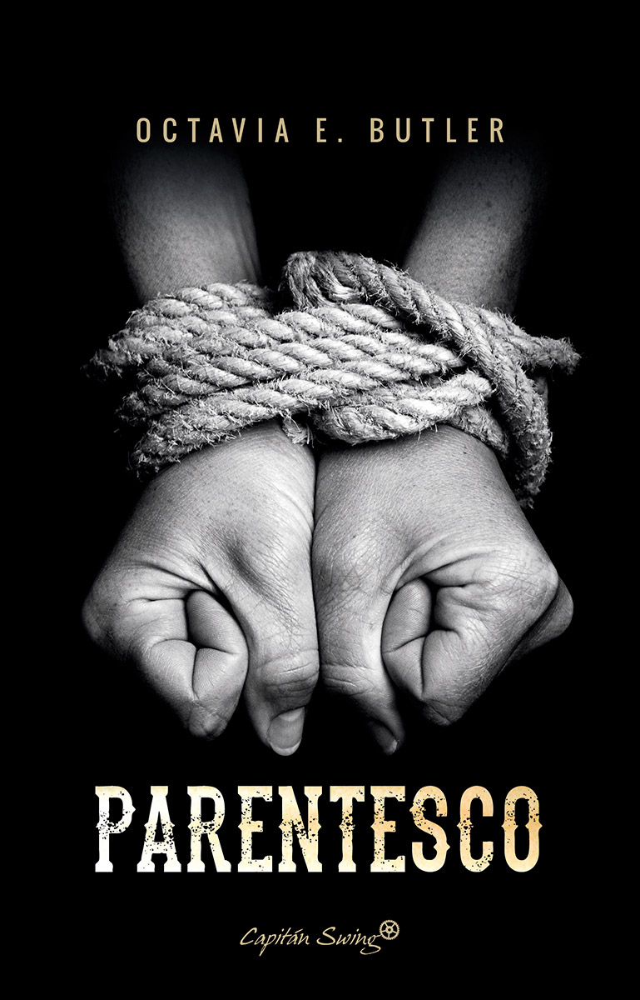
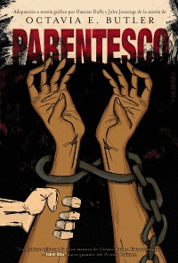

La parábola del sembrador

- ★ Todo el mundo sabe que el cambio es inevitable. Desde la segunda ley de la termodinámica hasta la evolución darwiniana, desde la insistencia del budismo en que nada es permanente y todo el sufrimiento se debe a nuestras ilusiones de permanencia hasta el tercer capítulo del Eclesiastés («Todo tiene su tiempo…»), el cambio es parte de la vida, de la existencia, de la sabiduría común. Pero no creo que estemos asimilando todo lo que eso significa. Ni siquiera hemos empezado a asimilarlo.
- Ella quiere un futuro que pueda entender y del que depender, un futuro que se parece mucho al presente de sus padres. Yo no creo que eso sea posible. Las cosas están cambiando mucho y muy rápido
- Nunca me ha parecido que estuviera inventándome nada de esto: ni el nombre, Semilla Terrestre, ni ningún otro aspecto. O sea, nunca me ha parecido que fuera otra cosa que la realidad misma: descubrimiento en lugar de invención, exploración en lugar de creación
- Quizá podríamos hacerlo; cultivar nuestros alimentos, cultivarnos nosotros y a nuestros vecinos para hacer crecer algo nuevo. Semilla Terrestre.
- Según mi padre, la gran ciudad es un animal muerto cubierto de muchísimos gusanos. Yo creo que tiene razón, aunque no todos los gusanos están en Los Ángeles. Aquí también hay.
- Donner no es más que una especie de barandilla humana. —¿De qué? —Me refiero a que es como…, como un símbolo del pasado al que agarrarnos mientras se nos empuja hacia el futuro. No es nada. No tiene sustancia. Pero tenerlo ahí, el último de una sucesión de dos siglos y medio de presidentes estadounidenses, hace que la gente piense que el país y la civilización en los que se crio siguen ahí, que saldremos de estos tiempos difíciles y volveremos a la normalidad.
- Olivar necesita una ayuda especial. Es un vecindario de gente blanca, culta y de clase media alta que antes tenía mucho poder. Ahora, no recibe ni siquiera la ayuda de los políticos que ese mismo vecindario contribuyó a que salieran elegidos. Todo el estado, el país, el mundo necesitan ayuda, ya se ha dicho. ¿De qué coño se queja la diminuta Olivar?
- Yo aún estoy aprendiendo lo obcecada que puede estar la gente en el autoengaño, incluso cuando están en juego su libertad o su vida. Él lleva más tiempo viviendo con ello. Me pregunto cómo lo hace.
- A los seres humanos se les da bien crear infiernos para sí mismos, incluso a partir de la riqueza.
- El duelo se presentaba así. Algo nos recordaba el pasado, nuestra casa, una persona, y entonces nos acordábamos de que todo eso había desaparecido.
- Pero es que no hay nada más intercambiable que la mano de obra no cualificada.
- No hay forma de ahorrar ni de prosperar.
- No hay seguridad en la esclavitud.
- Quiero que te lo tomes en serio. Soy consciente de que no sé mucho. Ninguno de nosotros sabe mucho. Pero todos podemos aprender más cosas. Y luego podemos enseñárnoslas los unos a los otros. Podemos dejar de negar la realidad o esperar a que desaparezca por arte de magia.
- A las personas es mejor enseñarlas que asustarlas, Lauren. Si las asustas y no pasa nada, pierden el miedo y tú pierdes parte de tu autoridad sobre ellas. Es más difícil asustarlas una segunda vez, más difícil enseñarlas, más difícil recuperar su confianza. Es mejor empezar enseñando.
- Las preguntas que hacen los niños pequeños te desquician, porque no tienen fin. Pero también te hacen pensar.
- No basta con que nos limitemos a sobrevivir, renqueando, haciendo como si nada, mientras la situación se vuelve cada vez peor.
- los débiles pueden superar a los fuertes si los débiles persisten. Persistir no es siempre lo más seguro, pero suele ser necesario.
- el mundo se vuelve loco cada tres o cuatro décadas. El truco consiste en sobrevivir hasta que recupera la cordura.
- la suspicacia tiene más probabilidades de mantenerte con vida que la confianza.
- Doe Mora salvó la situación
- Mora tiene razón —dijo—. Estás chalada. Suspiré. —Pero es una época de locos —continuó—. A lo mejor tú eres lo que necesita esta época, o lo que necesitamos nosotros. Me quedo
- Tiene que haber algo más que podamos hacer, un destino mejor que podamos moldear. Otro lugar. Otra forma. ¡Algo!
- Creo que quienes viajaran a mundos extrasolares quedarían a su suerte, lejos de políticos y empresarios, de economías en quiebra y de ecologías torturadas, y lejos también de la ayuda.
- Como en Talentos, subrayas la salida más que el desastre: aceptar el cambio en vez de negarlo, enseñar antes que asustar, persistir aunque no sea lo más seguro y apoyarte en quien decide quedarse. Vuelve a aparecer el trabajo como algo intercambiable y precario.
 La parábola de los talentos ✓ LeídoParable of the Talents · 1998 · Earthseed 2 · Capitán Swing, 2021
La parábola de los talentos ✓ LeídoParable of the Talents · 1998 · Earthseed 2 · Capitán Swing, 2021Continuación: Lauren funda Bellota y la comunidad Semilla Terrestre resiste a la teocracia de Jarret.
capitanswing.com · La parábola de los talentos
Parentesco ▶ Siguiente lecturaKindred · 1979 · Capitán Swing, 2018Dana, escritora negra de 1976, viaja una y otra vez a una plantación esclavista de Maryland.
capitanswing.com · Parentesco
Parentesco (novela gráfica) ✦ Por descubrirKindred: A Graphic Novel Adaptation · 2017 · Duffy & Jennings · Anaya Multimedia, 2019Adaptación en cómic de Parentesco; premio Bram Stoker 2018 a la mejor novela gráfica.
traficantes.org · Parentesco (novela gráfica) Hija de sangre y otros relatos ✦ Por descubrirBloodchild and Other Stories · 1995 · consonni, 2020
Hija de sangre y otros relatos ✦ Por descubrirBloodchild and Other Stories · 1995 · consonni, 2020Siete relatos y dos ensayos; incluye «Hija de sangre» (Hugo y Nebula) y «Sonidos de habla» (Hugo).
consonni.org · Hija de sangre- La estirpe de Lilith (Xenogénesis) ✦ Por descubrirLilith's Brood · 1987–1989 · trilogía · Nova, 2021 (un volumen)
Tras una guerra nuclear, los oankali rescatan a la humanidad a cambio de mezclarse genéticamente con ella.
penguinlibros.com · La estirpe de Lilith - Semilla salvaje ? Por confirmar si lo tienesWild Seed · 1980 · Saga del Tejido 1 · consonni, 19 oct 2026
Doro, inmortal que roba cuerpos, y Anyanwu, sanadora cambiaformas, se enfrentan durante siglos.
consonni.org · Semilla salvaje - Sumo tejedor ✦ Por descubrirPatternmaster · 1976 · Saga del Tejido · Anunciada, sin fecha
Su primera novela publicada; consonni la anuncia junto a Nuevo linaje y Arca para próximos años.
distopolis.com · anuncio Saga del Tejido - Fledgling Sin ediciónFledgling · 2005 · última novela · Sin edición en castellano
Una vampira de aspecto infantil y amnésica reconstruye su identidad y su comunidad simbiótica.
isfdb.org · Fledgling (ediciones)
Todo el mundo sabe que el cambio es inevitable. Desde la segunda ley de la termodinámica hasta la evolución darwiniana, desde la insistencia del budismo en que nada es permanente y todo el sufrimiento se debe a nuestras ilusiones de permanencia hasta el tercer capítulo del Eclesiastés («Todo tiene su tiempo…»), el cambio es parte de la vida, de la existencia, de la sabiduría común. Pero no creo que estemos asimilando todo lo que eso significa. Ni siquiera hemos empezado a asimilarlo.
Cambio y Semilla Terrestre NÚCLEO
2Todo el mundo sabe que el cambio es inevitable. Desde la segunda ley de la termodinámica hasta la evolución darwiniana, desde la insistencia del budismo en que nada es permanente y todo el sufrimiento se debe a nuestras ilusiones de permanencia hasta el tercer capítulo del Eclesiastés («Todo tiene su tiempo…»), el cambio es parte de la vida, de la existencia, de la sabiduría común. Pero no creo que estemos asimilando todo lo que eso significa. Ni siquiera hemos empezado a asimilarlo.
12Ella quiere un futuro que pueda entender y del que depender, un futuro que se parece mucho al presente de sus padres. Yo no creo que eso sea posible. Las cosas están cambiando mucho y muy rápido
8Nunca me ha parecido que estuviera inventándome nada de esto: ni el nombre, Semilla Terrestre, ni ningún otro aspecto. O sea, nunca me ha parecido que fuera otra cosa que la realidad misma: descubrimiento en lugar de invención, exploración en lugar de creación
16Quizá podríamos hacerlo; cultivar nuestros alimentos, cultivarnos nosotros y a nuestros vecinos para hacer crecer algo nuevo. Semilla Terrestre.
Colapso y negación CRISIS
1Según mi padre, la gran ciudad es un animal muerto cubierto de muchísimos gusanos. Yo creo que tiene razón, aunque no todos los gusanos están en Los Ángeles. Aquí también hay.
3Donner no es más que una especie de barandilla humana. —¿De qué? —Me refiero a que es como…, como un símbolo del pasado al que agarrarnos mientras se nos empuja hacia el futuro. No es nada. No tiene sustancia. Pero tenerlo ahí, el último de una sucesión de dos siglos y medio de presidentes estadounidenses, hace que la gente piense que el país y la civilización en los que se crio siguen ahí, que saldremos de estos tiempos difíciles y volveremos a la normalidad.
23Olivar necesita una ayuda especial. Es un vecindario de gente blanca, culta y de clase media alta que antes tenía mucho poder. Ahora, no recibe ni siquiera la ayuda de los políticos que ese mismo vecindario contribuyó a que salieran elegidos. Todo el estado, el país, el mundo necesitan ayuda, ya se ha dicho. ¿De qué coño se queja la diminuta Olivar?
10Yo aún estoy aprendiendo lo obcecada que puede estar la gente en el autoengaño, incluso cuando están en juego su libertad o su vida. Él lleva más tiempo viviendo con ello. Me pregunto cómo lo hace.
18A los seres humanos se les da bien crear infiernos para sí mismos, incluso a partir de la riqueza.
14El duelo se presentaba así. Algo nos recordaba el pasado, nuestra casa, una persona, y entonces nos acordábamos de que todo eso había desaparecido.
Trabajo y esclavitud CRISIS
19Pero es que no hay nada más intercambiable que la mano de obra no cualificada.
22No hay forma de ahorrar ni de prosperar.
24No hay seguridad en la esclavitud.
Enseñar y aprender EDUCACIÓN
4Quiero que te lo tomes en serio. Soy consciente de que no sé mucho. Ninguno de nosotros sabe mucho. Pero todos podemos aprender más cosas. Y luego podemos enseñárnoslas los unos a los otros. Podemos dejar de negar la realidad o esperar a que desaparezca por arte de magia.
5A las personas es mejor enseñarlas que asustarlas, Lauren. Si las asustas y no pasa nada, pierden el miedo y tú pierdes parte de tu autoridad sobre ellas. Es más difícil asustarlas una segunda vez, más difícil enseñarlas, más difícil recuperar su confianza. Es mejor empezar enseñando.
15Las preguntas que hacen los niños pequeños te desquician, porque no tienen fin. Pero también te hacen pensar.
Persistir y sobrevivir RESISTENCIA
6No basta con que nos limitemos a sobrevivir, renqueando, haciendo como si nada, mientras la situación se vuelve cada vez peor.
13los débiles pueden superar a los fuertes si los débiles persisten. Persistir no es siempre lo más seguro, pero suele ser necesario.
17el mundo se vuelve loco cada tres o cuatro décadas. El truco consiste en sobrevivir hasta que recupera la cordura.
11la suspicacia tiene más probabilidades de mantenerte con vida que la confianza.
Comunidad y aliados COMUNIDAD
20Doe Mora salvó la situación
21Mora tiene razón —dijo—. Estás chalada. Suspiré. —Pero es una época de locos —continuó—. A lo mejor tú eres lo que necesita esta época, o lo que necesitamos nosotros. Me quedo
Destino: otro lugar DESTINO
7Tiene que haber algo más que podamos hacer, un destino mejor que podamos moldear. Otro lugar. Otra forma. ¡Algo!
9Creo que quienes viajaran a mundos extrasolares quedarían a su suerte, lejos de políticos y empresarios, de economías en quiebra y de ecologías torturadas, y lejos también de la ayuda.
Otras obras de Octavia E. Butler
Continuación: Lauren funda Bellota y la comunidad Semilla Terrestre resiste a la teocracia de Jarret.
capitanswing.com · La parábola de los talentosDana, escritora negra de 1976, viaja una y otra vez a una plantación esclavista de Maryland.
capitanswing.com · ParentescoAdaptación en cómic de Parentesco; premio Bram Stoker 2018 a la mejor novela gráfica.
traficantes.org · Parentesco (novela gráfica)Siete relatos y dos ensayos; incluye «Hija de sangre» (Hugo y Nebula) y «Sonidos de habla» (Hugo).
consonni.org · Hija de sangreTras una guerra nuclear, los oankali rescatan a la humanidad a cambio de mezclarse genéticamente con ella.
penguinlibros.com · La estirpe de LilithDoro, inmortal que roba cuerpos, y Anyanwu, sanadora cambiaformas, se enfrentan durante siglos.
consonni.org · Semilla salvajeSu primera novela publicada; consonni la anuncia junto a Nuevo linaje y Arca para próximos años.
distopolis.com · anuncio Saga del TejidoUna vampira de aspecto infantil y amnésica reconstruye su identidad y su comunidad simbiótica.
isfdb.org · Fledgling (ediciones)Estados del lector según tu mapa Butler (butler.html). Semilla salvaje: pendiente de que confirmes si ya la tienes. Fledgling: sin edición en castellano según ISFDB.